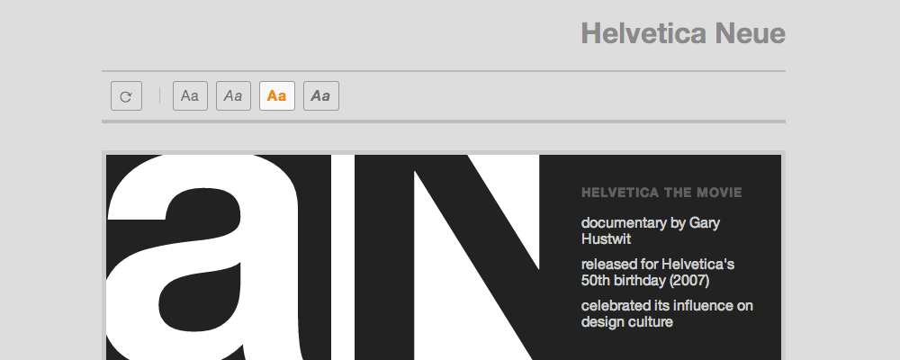

View interactive grid
I put together this interactive demo of the typeface Helvetica Neue for a typography studio assignment. We were required to present a 3-by-3 grid (featuring cropped characters within each box) and factual details about the typeface and designer. I chose to do an interactive piece where you could slide around the characters within the grid (to make new grid compositions out of the characters—which was a preliminary print assignment for this project) and reveal factoids about the typeface underneath.
Additional interactive features: you can refresh the grid to get new characters, double-click the grid squares to invert the colours and play with different figure-ground relationships, and toggle inclusion of bold and italic characters.
- Year 2013
- For Typography studio class
- Github View Github repository